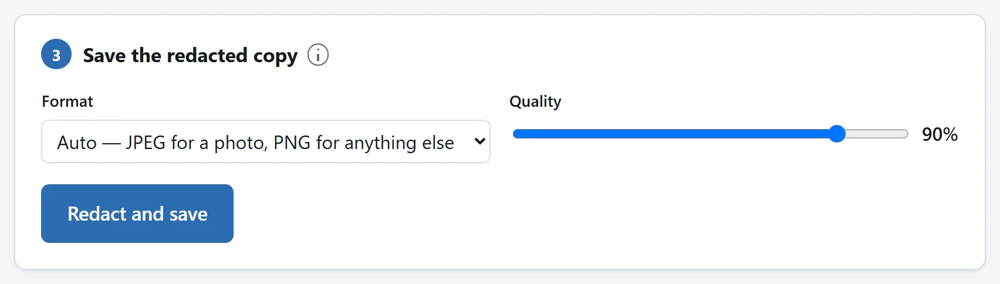
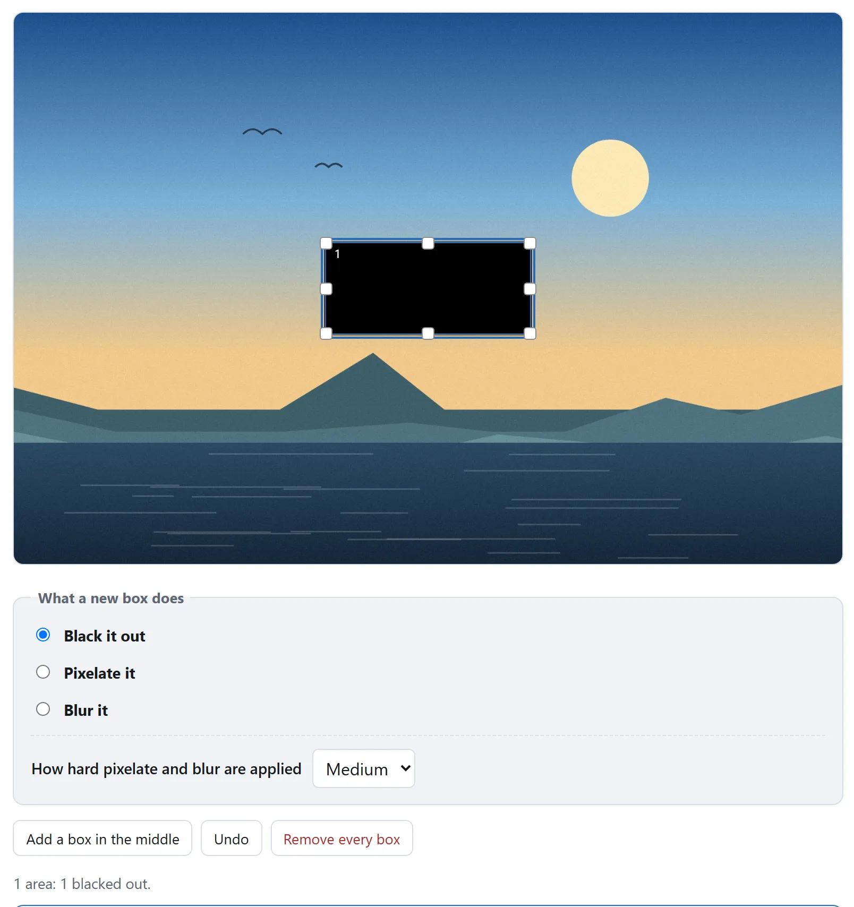

先说结论
打开图片涂黑与打码，把图片拖进去，在每一处不该被看到的地方拉一个框，然后按「涂黑并保存」。凡是能读成文字的，用涂黑。你拿回来的文件，原来有框的地方像素值已经不一样了：里面没有可以挪开的矩形，因为里面根本没有矩形。
下面讲的是最后这句话为什么才是重点，以及怎么判断你已经在用的软件能不能说同样的话。
客服截图和文件局部
问题报告截图。保留错误和解释它的控件，纯色盖住邮箱、账号、地址栏访问令牌及无关通知。PNG 保持留下的字清晰。添加附件前重开 -redacted 文件，读每个框周围，也查别处重复姓名。
收据、包裹标签或证件局部。完整盖住不需字段，文字周围留余量；二维码和条码也盖，不只盖人可读号码。预览小时可用 Left、Top、Width、Height 精确放框。每次一张，按原始大小检查保存件。删字段不能删别处线索，实色框仍显示遮盖位置和大小。身份识别重要时脸也用纯色，模糊和像素化仍保留主体测量信息。
遮住和删掉，在屏幕上一模一样
在 PDF 阅读器、幻灯片、文字处理软件或者带图层的图像编辑器里，往一个名字上画一个黑色矩形。你看到的是一个名字，上面压着一个黑色矩形。而在这些软件里，你保存下来的多半是一份含着这个名字的文档，外加一个另存的矩形，它有自己的位置、大小和颜色。
拿到这个文件的人可以把矩形挪开、删掉，或者换一个按不同顺序画图层的程序打开。名字还在里面。屏幕上看不出刚才发生的是哪一种，而这正是这种事一再发生在有法务部门的机构身上的原因。
法院卷宗、政府报告、合同，还有不止一家报社扫描的文件，都是这样流出去的。套路每次都一样：矩形是批注，而批注不是图片。
什么才算真正的涂黑
一张图片是一格一格的数字，一个像素一个数字。给它涂黑，就是往这些格子里写进别的数字，然后把这些格子保存下来。这之后没有什么可以还原，不是因为文件藏得好，而是因为那些数值不在文件里。只有这一种做法，经得起一个好奇的人把文件打开。
由此有三件事，一份真正涂过的文件就该是这个样子：
- 结果是平平的一张图。没有图层，没有对象，没有批注列表，也没有什么可以开关。如果你的工具交回来的文件里带着一个图层，那它是遮住了，不是删掉了。
- 它是一个新文件，不是改过的旧文件。像素走过了一次解码和一次编码，出来的东西是从涂好的那批格子里写出来的。
- 元数据也跟着没了，这是顺带的结果。一格一格的像素不带相机型号，不带 GPS 位置，也不带时间。原本会有哪些东西，见一张照片替你说了些什么。
最后这一条值得展开，因为里面还藏着一个坑。很多照片带着一份内嵌缩略图：图片的第二份小副本，在文件生成时写下，而在图片被编辑之后不一定会重新生成。一张被就地修改、而不是被重新编码的照片，可能带着涂黑之前的缩略图一起出门。那是一张小图，但要在上面认出一个名字，绰绰有余。

涂黑、打码、模糊：为什么不能划等号
三种都会覆盖像素，只有一种什么都不留下。
涂黑
框内每个像素都变成同一颜色，不保留原有轮廓或平均亮度。但框的大小和周围上下文仍可能暗示原字段类型。这是三种方式中唯一能对恢复原像素给出明确否定答案的方式。姓名、地址、账号、车牌、签名和条形码应使用纯色覆盖。
打码
框被切成小格，每一格变成那一格的平均色。原来的像素确实没了，但一格一格的平均值仍然是对下面内容的一次测量，而对文字来说，这次测量可能就够了。
攻击一点也不精巧。文字来自一个很小的可能集合：一种字体、一个字号、一个位置、一串字符。猜得到那里原本是哪一类内容的人，可以把每一个候选字符串照同样的方式渲染出来，用同样的格子打码，再拿平均值跟你的比。通常只有一个对得上。这在真实的打码截图上已经被演示过，也有公开的软件在做这件事。
起决定作用的是这块马赛克由多少格组成。一个词上面两格，就是两个数字，两个数字确定不了一串字符；同一个词上面四十格，就是四十个数字，四十个绰绰有余。这也是这个工具为什么宁可告诉你图上最细的那块马赛克有多少格，而不是把一个档位叫作「强」：数字是事实，形容词只是对事实的看法。
模糊
每个像素变成周围像素的加权平均。这是一次卷积，而卷积原则上可以反过来算：从模糊的副本里把原图找回来是一个标准问题，有标准软件，而且它最擅长的恰好就是这里最要紧的那种情况，也就是用很小的半径去模糊清晰的文字。
马赛克和模糊可以减弱无关背景的干扰，但不能作为防止识别的保证。如果暴露主体会有影响，用纯色填充。姓名、数字和其他可读字段，涂黑。

发出去之前的四个检查
加起来一分钟，对任何工具的结果都适用，也包括这一个。能被你检查的说法，比要你相信的说法值钱。
- 尝试选择文字。打开文件，在覆盖区域拖动。如果仍能选中，文字还在文档里，你看到的只是盖在上面的形状。
- 在编辑器里检查图层。真正处理后的图片应只有一个类似“背景”的图层。独立矩形对象表示原内容还在下方。
- 检查缩略图。部分文件管理器和查看器显示嵌入缩略图，不重新读取画面。如果小图仍有遮掉的内容，文件只是编辑过，没有重建。
- 检查边缘和周围。确认框外没有残留字母、数字或条形码片段，其他位置也没有重复同一字段。JPEG 压缩能让框边缘变软，所以仅凭边缘锐利程度，不能判断原像素是否被改写。
能裁掉就别遮
如果要藏的东西在图片边上，比如带账户名的页眉、浏览器标签页、显示着用户名的任务栏，那么裁掉比遮住更彻底，文件看起来也更干净。没有一个框需要被怀疑，因为那里已经什么都没有了。
截图往往才是最危险的
在一张截图里，能认出你的常常不只是图片本身。发出去之前，看看你想展示的那块四周还有什么：窗口标题、地址栏和它的补全列表、开着的标签页、一条通知、时间和日期、任务栏、角落里已登录的头像、无线网络的名字。其中任何一样都可能定位到你，而它们都不是你按下截图时在看的东西。
这件事不需要上传
读一张图片、往它的一部分像素上写、再重新编码，这些事浏览器已经会做很多年了。护照、工资单或者银行流水的照片，没有任何技术上的理由非要跑一趟陌生人的服务器再回来，只为被盖上一个黑框。而送进这类工具的，恰恰就是这些图片。
这里的工具不会把它们送到任何地方：页面的 Content-Security-Policy 写着它能联系的每一个地址，没有一个是本站的。如果你更愿意自己查而不是听人说，那就把页面加载好，断网，再照样涂一张。把文件传给在线转换网站安全吗？里还有三个检查，对任何工具都能做。